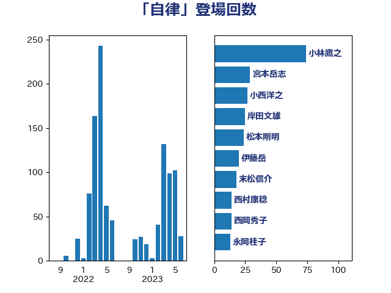

単語「自律」

| 小林鷹之 | 自由民主党 | 74 回 |
| 宮本岳志 | 日本共産党 | 29 回 |
| 小西洋之 | 立憲民主党 | 27 回 |
| 岸田文雄 | 自由民主党 | 25 回 |
| 松本剛明 | 自由民主党 | 24 回 |
| 伊藤岳 | 日本共産党 | 20 回 |
| 末松信介 | 自由民主党 | 18 回 |
| 西村康稔 | 自由民主党 | 14 回 |
| 西岡秀子 | 国民民主党 | 14 回 |
| 永岡桂子 | 自由民主党 | 13 回 |
| 高市早苗 | 自由民主党 | 12 回 |
| 田村智子 | 日本共産党 | 12 回 |
| 金子恭之 | 自由民主党 | 11 回 |
| 萩生田光一 | 自由民主党 | 11 回 |
| 浅田均 | 日本維新の会 | 11 回 |
| 吉良よし子 | 日本共産党 | 11 回 |
| 福島みずほ | 社会民主党 | 10 回 |
| 芳賀道也 | 国民民主党 | 9 回 |
| 玉木雄一郎 | 国民民主党 | 9 回 |
| 浜田靖一 | 自由民主党 | 9 回 |
| 赤嶺政賢 | 日本共産党 | 8 回 |
| 矢倉克夫 | 公明党 | 8 回 |
| 後藤茂之 | 自由民主党 | 8 回 |
| 加藤勝信 | 自由民主党 | 8 回 |
| 井上哲士 | 日本共産党 | 8 回 |
| 鈴木俊一 | 自由民主党 | 6 回 |
| 舩後靖彦 | れいわ新選組 | 6 回 |
| 林芳正 | 自由民主党 | 6 回 |
| 打越さく良 | 立憲民主党 | 6 回 |
| 山添拓 | 日本共産党 | 6 回 |
| 小沢雅仁 | 立憲民主党 | 6 回 |
| 奥野総一郎 | 立憲民主党 | 6 回 |
| 大塚耕平 | 国民民主党 | 6 回 |
| 篠原豪 | 立憲民主党 | 5 回 |
| 礒崎哲史 | 国民民主党 | 5 回 |
| 石井苗子 | 日本維新の会 | 5 回 |
| 横山信一 | 公明党 | 5 回 |
| 柘植芳文 | 自由民主党 | 5 回 |
| 松野博一 | 自由民主党 | 5 回 |
| 新藤義孝 | 自由民主党 | 5 回 |
| 山田賢司 | 自由民主党 | 5 回 |
| 小野泰輔 | 日本維新の会 | 5 回 |
| 伊佐進一 | 公明党 | 5 回 |
| 齋藤健 | 自由民主党 | 4 回 |
| 道下大樹 | 立憲民主党 | 4 回 |
| 神谷裕 | 立憲民主党 | 4 回 |
| 湯原俊二 | 立憲民主党 | 4 回 |
| 浅川義治 | 日本維新の会 | 4 回 |
| 河野太郎 | 自由民主党 | 4 回 |
| 梅村聡 | 日本維新の会 | 4 回 |
| 岩渕友 | 日本共産党 | 4 回 |
| 岡田直樹 | 自由民主党 | 4 回 |
| 山際大志郎 | 自由民主党 | 4 回 |
| 國重徹 | 公明党 | 4 回 |
| 北神圭朗 | 無所属 | 4 回 |
| 北側一雄 | 公明党 | 4 回 |
| 中野洋昌 | 公明党 | 4 回 |
| 三木圭恵 | 日本維新の会 | 4 回 |
| 青山繁晴 | 自由民主党 | 3 回 |
| 鈴木義弘 | 国民民主党 | 3 回 |
| 浅野哲 | 国民民主党 | 3 回 |
| 星野剛士 | 自由民主党 | 3 回 |
| 平将明 | 自由民主党 | 3 回 |
| 尾身朝子 | 自由民主党 | 3 回 |
| 宮本徹 | 日本共産党 | 3 回 |
| 大島敦 | 立憲民主党 | 3 回 |
| 堀井巌 | 自由民主党 | 3 回 |
| 三浦信祐 | 公明党 | 3 回 |
| 齊藤健一郎 | 無所属 | 2 回 |
| 黄川田仁志 | 自由民主党 | 2 回 |
| 高良鉄美 | 無所属 | 2 回 |
| 青柳陽一郎 | 立憲民主党 | 2 回 |
| 阿部司 | 日本維新の会 | 2 回 |
| 鈴木庸介 | 立憲民主党 | 2 回 |
| 西田昌司 | 自由民主党 | 2 回 |
| 西田実仁 | 公明党 | 2 回 |
| 葉梨康弘 | 自由民主党 | 2 回 |
| 荒井優 | 立憲民主党 | 2 回 |
| 羽生田俊 | 自由民主党 | 2 回 |
| 福島伸享 | 無所属 | 2 回 |
| 福山哲郎 | 立憲民主党 | 2 回 |
| 白石洋一 | 立憲民主党 | 2 回 |
| 甘利明 | 自由民主党 | 2 回 |
| 柴田巧 | 日本維新の会 | 2 回 |
| 柳ヶ瀬裕文 | 日本維新の会 | 2 回 |
| 村田享子 | 立憲民主党 | 2 回 |
| 本田顕子 | 自由民主党 | 2 回 |
| 本庄知史 | 立憲民主党 | 2 回 |
| 朝日健太郎 | 自由民主党 | 2 回 |
| 早稲田ゆき | 立憲民主党 | 2 回 |
| 後藤祐一 | 立憲民主党 | 2 回 |
| 平木大作 | 公明党 | 2 回 |
| 市村浩一郎 | 日本維新の会 | 2 回 |
| 工藤彰三 | 自由民主党 | 2 回 |
| 小倉將信 | 自由民主党 | 2 回 |
| 安江伸夫 | 公明党 | 2 回 |
| 堀場幸子 | 日本維新の会 | 2 回 |
| 坂井学 | 自由民主党 | 2 回 |
| 嘉田由紀子 | 無所属 | 2 回 |
| 和田義明 | 自由民主党 | 2 回 |
| 吉田宣弘 | 公明党 | 2 回 |
| 勝部賢志 | 立憲民主党 | 2 回 |
| 井坂信彦 | 立憲民主党 | 2 回 |
| 井上貴博 | 自由民主党 | 2 回 |
| 中司宏 | 日本維新の会 | 2 回 |
| 鳩山二郎 | 自由民主党 | 1 回 |
| 鰐淵洋子 | 公明党 | 1 回 |
| 高橋千鶴子 | 日本共産党 | 1 回 |
| 高橋はるみ | 自由民主党 | 1 回 |
| 高木真理 | 立憲民主党 | 1 回 |
| 高木啓 | 自由民主党 | 1 回 |
| 馬場雄基 | 立憲民主党 | 1 回 |
| 青柳仁士 | 日本維新の会 | 1 回 |
| 階猛 | 立憲民主党 | 1 回 |
| 長谷川岳 | 自由民主党 | 1 回 |
| 長峯誠 | 自由民主党 | 1 回 |
| 鈴木憲和 | 自由民主党 | 1 回 |
| 野田聖子 | 自由民主党 | 1 回 |
| 進藤金日子 | 自由民主党 | 1 回 |
| 輿水恵一 | 公明党 | 1 回 |
| 足立康史 | 日本維新の会 | 1 回 |
| 谷公一 | 自由民主党 | 1 回 |
| 西野太亮 | 自由民主党 | 1 回 |
| 落合貴之 | 立憲民主党 | 1 回 |
| 若松謙維 | 公明党 | 1 回 |
| 舞立昇治 | 自由民主党 | 1 回 |
| 細田健一 | 自由民主党 | 1 回 |
| 篠原孝 | 立憲民主党 | 1 回 |
| 笠浩史 | 無所属 | 1 回 |
| 稲富修二 | 立憲民主党 | 1 回 |
| 田村まみ | 国民民主党 | 1 回 |
| 田中英之 | 自由民主党 | 1 回 |
| 猪口邦子 | 自由民主党 | 1 回 |
| 片山大介 | 日本維新の会 | 1 回 |
| 津島淳 | 自由民主党 | 1 回 |
| 河野義博 | 公明党 | 1 回 |
| 池下卓 | 日本維新の会 | 1 回 |
| 櫛渕万里 | れいわ新選組 | 1 回 |
| 森本真治 | 立憲民主党 | 1 回 |
| 森山浩行 | 立憲民主党 | 1 回 |
| 松野明美 | 日本維新の会 | 1 回 |
| 杉尾秀哉 | 立憲民主党 | 1 回 |
| 本田太郎 | 自由民主党 | 1 回 |
| 有村治子 | 自由民主党 | 1 回 |
| 早坂敦 | 日本維新の会 | 1 回 |
| 日下正喜 | 公明党 | 1 回 |
| 広瀬めぐみ | 自由民主党 | 1 回 |
| 山本佐知子 | 自由民主党 | 1 回 |
| 山崎誠 | 立憲民主党 | 1 回 |
| 山口那津男 | 公明党 | 1 回 |
| 尾崎正直 | 自由民主党 | 1 回 |
| 小沼巧 | 立憲民主党 | 1 回 |
| 小林史明 | 自由民主党 | 1 回 |
| 小山展弘 | 立憲民主党 | 1 回 |
| 宮崎勝 | 公明党 | 1 回 |
| 太栄志 | 立憲民主党 | 1 回 |
| 大野泰正 | 自由民主党 | 1 回 |
| 堤かなめ | 立憲民主党 | 1 回 |
| 堂込麻紀子 | 無所属 | 1 回 |
| 城井崇 | 立憲民主党 | 1 回 |
| 坂本祐之輔 | 立憲民主党 | 1 回 |
| 和田有一朗 | 日本維新の会 | 1 回 |
| 吉良州司 | 無所属 | 1 回 |
| 吉田とも代 | 日本維新の会 | 1 回 |
| 吉川元 | 立憲民主党 | 1 回 |
| 古賀友一郎 | 自由民主党 | 1 回 |
| 古川直季 | 自由民主党 | 1 回 |
| 勝目康 | 自由民主党 | 1 回 |
| 住吉寛紀 | 日本維新の会 | 1 回 |
| 伊藤孝江 | 公明党 | 1 回 |
| 伊藤俊輔 | 立憲民主党 | 1 回 |
| 井出庸生 | 自由民主党 | 1 回 |
| 中谷一馬 | 立憲民主党 | 1 回 |
| 中曽根康隆 | 自由民主党 | 1 回 |
| 上野通子 | 自由民主党 | 1 回 |
| ながえ孝子 | 無所属 | 1 回 |
| こやり隆史 | 自由民主党 | 1 回 |